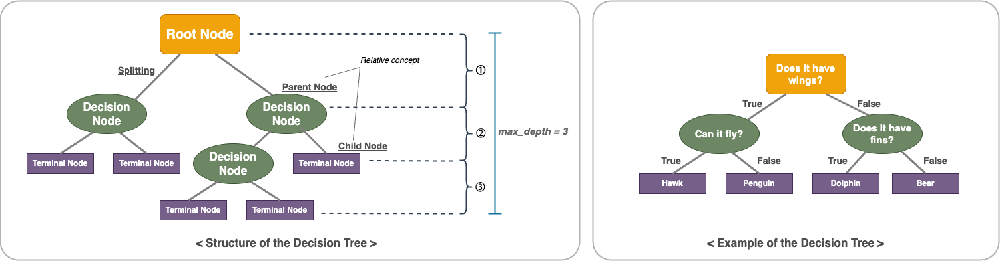

A decision tree is one of the algorithms in supervised learning in machine learning, and it is an analysis method that plots decision rules in a tree structure. It is a model that analyzes data and predicts outcomes based on a set of questions, such as Twenty Questions. Each question classifies data into two or more groups based on specific criteria. This categorization process is represented by a tree structure, with each node representing an answer to a particular question and showing the possible answers. Finally, the leaf nodes represent the outcome. Decision trees are intuitively easy to understand and often used when explanations are needed. The structure of a decision tree can be illustrated as follows.
The illustration on the right above is an example of distinguishing between four animals: bear, hawk, penguin, and dolphin. The goal is to solve the problem with as few yes/no questions as possible. By asking if it has wings, we can narrow down the likely animals to two. If the answer is "yes", we need to ask a question that distinguishes between an eagle and a penguin. For example, we need to ask if it can fly. If it doesn't have wings, the possible animals would be bears and dolphins. Now we need to ask questions to distinguish between these two animals, for example, do they have fins? This sequence of questions can be represented as a decision tree, as shown in the figure above.
In addition, the most important thing to watch out for when performing the decision tree technique is overfitting, which can reduce the accuracy of the analysis. If you keep adding classification criteria to increase the accuracy of the model, aiming for a perfect rule that satisfies the situation of all data, the depth of the tree will increase, which will reduce its ability to be flexible in real-world situations. Therefore, when performing decision tree-based analysis, it is also essential to improve the model's performance by reducing the model's complexity and controlling overfitting.
There are two ways to perform Classification and Prediction. In the case of Classification, a decision tree is used to categorize data into several predefined classes or categories. For example, they are used for tasks such as predicting whether a cancer patient's tumor is benign or malignant or classifying whether an email is spam or not. These classification tasks are based on labeled data. For Prediction, decision trees are used to predict continuous values based on patterns in a given data set. For example, they are used for tasks such as predicting a house's price or the number of sales. In this assignment, the primary focus is on the price of a vehicle, analyzing which of the various characteristics of a vehicle affect its price and predicting the price of the vehicle. The price of a vehicle is a continuous variable, not a categorical variable. Therefore, this assignment focuses on Prediction rather than Classification.
So, what is the process of analyzing a decision tree? Building a decision tree is defining the purpose of the analysis, finding an appropriate splitting rule, and growing the tree according to this purpose. Finding an appropriate splitting rule means considering which classification criteria will skew the data to one side and creating an algorithm to find this condition. In other words, the child nodes are formed in the direction that reduces the impurity index the most. It is a numerical representation of how many different objects are in a group, and several metrics can be used to measure it, such as the Gini index and the entropy index. These algorithms are called recursive partitioning algorithms for decision trees. These algorithms grow the tree and stop when an appropriate stopping rule is satisfied. The stopping rule sets when to stop growing the tree so you can decide how deep to let the tree go and how many leaf nodes to divide. There is a risk of overfitting or underfitting the decision tree. If the depth of the decision tree is too deep and there is a risk of overfitting, you can perform a pruning tree to remove unnecessary branches. After performing a feasibility evaluation on the optimal tree, interpret the model and set up a classification and prediction model to utilize the classification and prediction of data.
As mentioned earlier, the decision tree is grown through a recursive splitting algorithm, where the tree forms branches in the direction of decreasing impurity. To put it simply, when building a decision tree, it is vital to find a classification criterion that can accurately distinguish between classes, i.e., to find a classification criterion that will ensure that the data is grouped with the same objects. At this time, the impurity algorithm is used to check how many different objects are mixed in the current population and form branches with lower impurity.
Two related concepts are the Gini index and entropy.
The Gini index measures how uncertain and diverse a population is. A Gini index of 0 means zero uncertainty, meaning that objects with the same characteristics are well clustered together. The formula for the Gini index is as follows.
Note that the above formula includes squaring. Measuring this value only once can result in a chance result, so it is more accurate to measure it at least twice. For this reason, it may be easier to understand the expression if you think of it as including a square. The more objects in a group with a single characteristic, the easier it is to describe the group with a single word. Therefore, the more identical the characteristics of the group members, the lower the Gini Index, and the more diverse the group, the higher the Gini Index. To help you understand the Gini Index, here's an example.
A, which runs a clothing shopping mall, wants to prevent churn by creating a rule to distinguish between LC (Loyal Customer) and CC (Churn Customer) among the mall's customers. It is an example of how to classify ten customers by gender and marital status to categorize churn customers better.
When the group was categorized by gender, the Gini index decreased from 0.5 to 0.167, and when the group was categorized by marital status(marriage), the Gini index decreased from 0.5 to 0.48. Therefore, it is recommended to categorize the group by gender to identify churned customers.
Entropy is a concept originally used in thermodynamics to indicate the degree of disorder and is used in decision trees as a similar concept to the Gini index. So, like the Gini index, the lower the entropy value, the higher the purity, i.e., the smaller the value, the better the classification of objects with the same characteristics. Below is the formula to find entropy.
From the above expression, we can see that entropy is calculated using logarithms. But why is it calculated with -log? Entropy comes from information theory, which is a theory that calculates how much information there is. Since computers are composed of bits (0, 1), it is the principle of calculating uncertainty and information by adding a value to log2. Therefore, the reason why - is added when calculating entropy is that the (pk) part always comes out as a fraction when finding the number that belongs to the total number. It is because the log is always negative when combined, so it is prefixed with - to convert it to a positive number.
Using the concept of entropy, we can create the concept of Information Gain (IG), which refers to the value of information, and the higher the value, the better. According to the formula above, IG is the pre-entropy minus the post-entropy. Therefore, IG can be interpreted as how much the uncertainty has been reduced, and a large value means that the uncertainty has been reduced a lot. Here is an example of applying the entropy criterion to the same situation as the Gini coefficient example above.
In the figure above, when the group was categorized by 'gender', the entropy increased by 0.61 (IG) from 1 to 0.39, and when the group was categorized by 'marital status(marriage)', the entropy decreased by 0.029 from 1 to 0.971. Therefore, it is recommended to categorize the group by 'gender' to identify churning customers.
What should be considered to build a perfectly fitting model for a given data set? Is it possible to create infinite decision trees for more accurate models and predictions? While this is theoretically possible, in practice, it is not. This is because overfitting can occur for a given set of data. Overfitting is the phenomenon of learning too much about the training data, resulting in a model that is difficult to generalize to new data or needs to be more accurate. When a decision tree can grow to infinity, it is possible to create a unique leaf node for each training data point, making the tree a perfect fit for the training data. However, the resulting tree may have poor predictive performance when making predictions on new data. Therefore, to effectively build a decision tree, it is essential to use proper pruning techniques to limit the tree size and improve its generalization performance. It allows the model to learn common patterns and make more accurate predictions on new data.